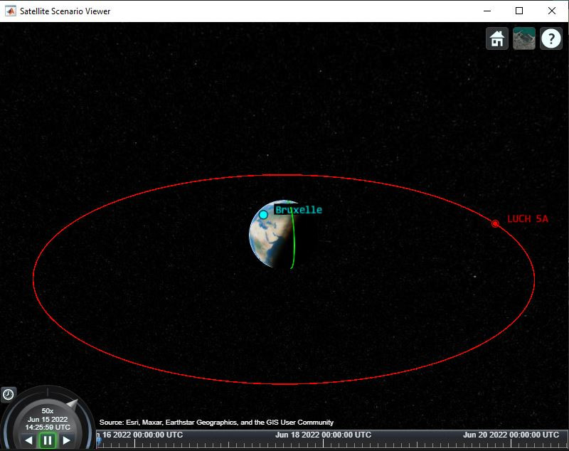

je li imao tko slučaj da mu je popis intervala prazan.
Ovako mi izgleda simulacija:

ali mi se ova zelena linija čini čudna (kako simulacija prolazi malo se pomiče lijevo-desno ali to je to)
startTimeString = "2022-06-15 14:25:59"
startTime = datetime(startTimeString,'InputFormat','yyyy-MM-dd HH:mm:ss');
sampleTime = 60;
stopTime = startTime + days(5);
sc = satelliteScenario(startTime,stopTime,sampleTime);
sat = satellite(sc,"tledatoteka.txt");
lat = 50.8476;
lon = 4.3572;
gs = groundStation(sc,"Name","Bruxelle", ...
"Latitude",lat,"Longitude",lon);
%ovdje možda problem?
pointAt(sat,'nadir');
antenna = conicalSensor(sat,"MaxViewAngle",75);
ac = access(antenna,gs);
t = accessIntervals(ac);
fieldOfView(antenna);
show(sat);
play(sc);
ovo je kod
EDIT:
popravljeno, uzeo sam drugi satelit koji nije tako daleko